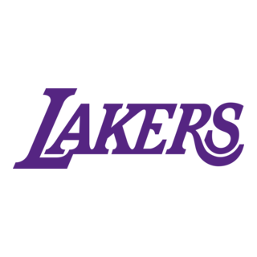

<!DOCTYPE html>
<html lang="pt-BR">
</html>
 <head>
    <meta charset="UTF-8">
    <meta name="viewport"content="width=device-width, initial-scale=1.0">
     <title>LAKERS</title>
      <link rel="shortcut icon" href="akers.png" type="image/x-icon">
      <link rel="stylesheet" href="estilos/reset.css">
      <link rel="stylesheet" href="estilos/style-novo.css">
 </head>  
<body>
   <header class="cabeçalho">
   
     <div class=".cabeçalho">
   </div>
   </header>
   <h1><strong>HISTÓRIA</strong></h1>
    <h2>Nós somos o Los Angeles Lakers, uma das franquias mais históricas e respeitadas da NBA. Nascemos em 1947 
    como Minneapolis Lakers, levando o nome dos famosos lagos de Minnesota. Em 1960, encontramos um novo lar em
    Los Angeles, onde nossa história de conquistas realmente começou. Ao longo das décadas, construímos uma dinastia
    com lendas como Magic Johnson, Kareem Abdul-Jabbar, Shaquille O’Neal, Kobe Bryant e LeBron James. Nossa identidade
    vai além das quadras — somos paixão, tradição e espetáculo. Com uma rivalidade marcante contra o Boston Celtics
    e dezenas de títulos, representamos o verdadeiro espírito do basquete.</h2>  
    <h3><strong>MELHOR FRANQUIA</strong></h3>
    <h4><strong> fase mais marcante da história do Los Angeles Lakers aconteceu nos anos 1980, durante a era do Showtime.
    Com Magic Johnson liderando em quadra, Kareem Abdul-Jabbar dominando os garrafões e Pat Riley orquestrando 
    tudo do banco, o time encantou o mundo com um estilo de jogo rápido, criativo e eletrizante. Foram cinco títulos
    da NBA conquistados naquela década — 1980, 1982, 1985, 1987 e 1988 — consolidando uma das dinastias mais lendárias
    do esporte. Essa equipe não apenas vencia, mas também transformava cada partida em um espetáculo inesquecível.</strong></h4>
</body>
</html>